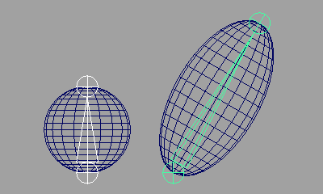
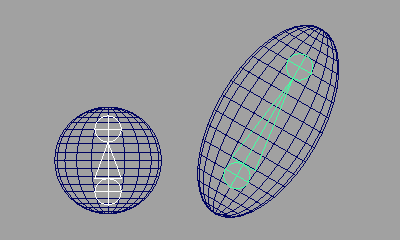
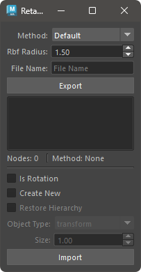
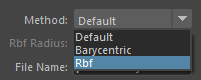
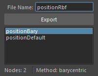
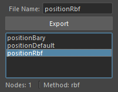

インポートするファイル名をリストから選択します。
エクスポートした時の方法に応じて、インポートする対象のノードを選択します。
Default- 選択の必要はありません。
Barycentric- エクスポートした時と同トポロジーのメッシュを選択してください。
Rbf- エクスポートした時と同トポロジーのメッシュを選択してください。
オプションを設定し、Import ボタンを押します。デフォルトの設定では、エクスポート時に選択したノードに位置情報が適用されます。

選択したノードの位置情報をエクスポート、インポートするツールです。
このツールは、選択したトランスフォームノードの位置や回転情報をファイルにエクスポート、インポートすることができます。
いくつかの方法で位置情報を取得、設定することができます。方法は以下の通りです。
トランスフォームノードの位置情報をワールド位置で取得し、ワールド位置で再現します。
トランスフォームノードの位置情報をそのノードから一番近い三角ポリゴンのバリセントリック座標で取得し、メッシュのバリセントリック座標で再現します。
再現時は、同じトポロジーのメッシュを選択する必要があります。
トランスフォームノードがメッシュの表面上にある場合に、有効な方法です。

トランスフォームノードの位置情報を周りの Vertex 位置から取得し、同トポロジーのメッシュへ再現します。
再現時は、同じトポロジーのメッシュを選択する必要があります。
トランスフォームノードがメッシュの内部にある場合に、有効な方法です。

専用のメニューか、以下のコマンドでツールを起動します。
import faketools.retarget_transform_ui
faketools.retarget_transform_ui.show_ui()

位置情報をエクスポートするには、以下の手順で行います。
Method からエクスポートする方法を選択します。

方法に応じて位置情報をエクスポートする対象のノードを選択します。
Default
Barycentric
Rbf
File Name にエクスポートするファイル名を入力します。

Export ボタンを押します。
エクスポートが完了すると、エクスポートしたファイル名がリストに表示されます。

※ Rbf の方法を選択した時は、Rbf Radius の値でエクスポート時の半径を設定できます。位置を再現する際に目的の挙動と異なる場合は、この値を大きくすることで期待する挙動が得られる場合があります。
位置情報をインポートするには、以下の手順で行います。
インポートするファイル名をリストから選択します。
エクスポートした時の方法に応じて、インポートする対象のノードを選択します。
Default
Barycentric
Rbf
オプションを設定し、Import ボタンを押します。デフォルトの設定では、エクスポート時に選択したノードに位置情報が適用されます。
インポート時に設定可能なオプションです。
Is Rotation
Create New
Object Type で選択したノードタイプで新規にトランスフォームノードを作成します。オフの場合は、エクスポート時に選択したノードに位置情報を適用します。Object Type
Create New がオンの時に作成するトランスフォームノードのタイプを選択します。Size
Create New がオンの時に作成するトランスフォームノードのサイズを設定します。リスト上で右クリックすると、コンテキストメニューが表示されます。

Select Nodes
Remove File
Refresh
Open Directory